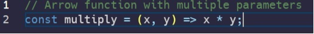

Exploring JavaScript
This week I familiarized myself with the basics of JavaScript on freecodecamp up to ES6. With my limited programming experience, this is the first time I have attempted to program in this language. Most of my experience is in languages like C, C++ and Java.
The first thing I noticed was that the syntax was easy to understand, most likely because of its similarities to C. However, I noticed that it was more concise and forgiving. For example, in Java, every variable that you declare requires a type. In JavaScript, the ‘let’ keyword can be used to declare primitive and reference types. This is because JavaScript determines variable types at run time, whereas Java does so at compile time. This makes programming in the language more intuitive. There is less syntax to memorize when writing code, which allows you to focus more on solving the problem as opposed to looking up keywords specific to the language. Although, because JavaScript is dynamically typed, this could lead to more errors at run time that will not be caught by the compiler as they would in statically typed languages.
One similarity between Java and JavaScript to note is their platform independence. Just as JavaScript can run on any web browser (that supports it, which most all do), Java can run on any system with JVMs. Still, I think JavaScript wins here because any platform that can run a web browser will support JavaScript, while there are platforms that do not support JVM.
JavaScript has many advantages with its abstraction. For example: arrow functions, classes, and template literals. Arrow functions allow for clear syntax, enhancing readability. This allows the programmer to declare functions without the ‘function’ keyword. There is no need for a return statement, or an arguments object, either. You can write a simple function, for example to multiply two integers, on one line.

Classes are quickly defined in JavaScript as opposed to C, C++ and Java. The syntax is more concise. The constructor method is called automatically, and there are no required access modifiers like ‘public’ or ‘private’. You can also change the behavior of a class and its methods after you define it. This makes the language more accessible and clear, which is ideal for web development.
Lastly, template literals make working with strings simple and hassle-free. You can define strings on multiple lines, and insert variables directly into a string definition. Again, this improves JavaScript’s readability and accessibility.
JavaScript’s web browser compatibility makes development easy for a software developer. Any system that can run a web browser can most likely run JavaScript. Cross-compatibility is important for development. Additionally, there are many libraries available that can assist in web development. There are endless online resources and tools available as well. JavaScript’s dynamic typing makes the language an ideal choice for software engineers, improving programming efficiency, readability, and accessibility. You can spend less time worrying about syntax and more time writing code.
While there are many advantages, it is important to note some disadvantages of JavaScript. Dynamic typing also has its inherent disadvantages. In Java, the compiler will catch type-related errors. In JavaScript, you might spend more time troubleshooting code after run time. This can lower efficiency. Another possible disadvantage is the complexity of all the libraries and tools available which can be overwhelming for a beginner such as myself. Lastly, some browsers may still have compatibility issues despite best efforts and headaches can arise from such.
Regular exercise is important to maintaining/improving your physical and mental health. The same applies to programming. The concept is the basis for “Athletic engineering”. Daily timed programming workouts are designed to enhance programming skills. The timed portion of the WODs puts pressure on you to improve your efficiency. My experience after several practice WODs is that they are useful for exposing your weaknesses. I initially failed to meet the time standard due to my lack of knowledge in certain fundamentals. These gave me focus areas to improve upon, and after doing so my times improved.